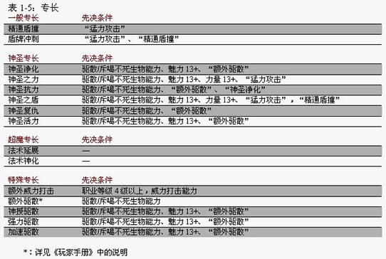

一些技能和专长的新增规则，大部分针对牧师、圣武士或相关进阶职业。
东西不多，不过有些看起来似乎还有点儿用处。
技能
想打造一名强大的成功冒险家，选择技能是一个至关重要的部分。当你的牧师或是圣武士升级得到新的技能点时，如何选择与分配这些技能点可能将是一个考验。请小心选择，尽量不要犯下错误，因为对于你的人物来说，稍有差池也许就意味着成功和失败的不同，或者甚至是生与死的差别。
新的“手艺”和“专业”技能
? “手艺（石雕）”：适用于雕塑，建筑装潢，制造石制武器，或者雕刻圣徽。
? “手艺（木雕）”：适用于制作面具、梳子、家具，雕刻圣徽和神像。
? “专业（占星家）”：本专业包括天文、占星、绘制海图的知识。对于经常施展预言系法术的人物非常有用。
某些技能新的使用方式
下面是牧师和圣武士可以采用特殊方式使用某些已有技能的范例。
? 涉及解剖学和生理学的“医疗”，本技能可以用于判断尸体的死亡时间和死亡原因等。DM可以允许用高DC的技能检定来进一步确定死因的具体信息，比如通过检查一处刺伤来确定凶手的身高。
? “知识（界域）”增加对地狱中的存在比如魔鬼，恶魔，低层界生物的认知，以及对天界存在如天使、神使以及高层界居民的了解。
? “知识（宗教）”可用于了解已灭绝的种族或文明的宗教信仰，也可用于了解怪物牧师所信奉的宗教。
? “知识（不死生物）”可以通晓不死生物的天性和战术。（原来有这个子类么？）
? “知识（战争）”包括对围攻方式，挖壕沟，围攻战术战略的了解。（此技能子类见Sword and Fist。）
新的专长
专长是D&D游戏中一个激动人心的要素。这部分为圣武士和牧师设计了一些新的选择（尽管其他具备资格的人也可以学习）。
*虚拟专长说明从略。
神圣专长
这一类新专长具有一些共同的特性。第一，学习所有这些专长的先决条件都包括驱散（或是斥喝）不死生物能力。因此，是专为牧师、3级以上的圣武士和其他具有此能力的进阶职业人物准备的。第二，神圣专长也是一种引导正负能量产生作用的手段。使用神圣专长会耗费你每日能使用的驱散/斥喝不死生的次数。如果你没有剩余的驱散/斥喝次数，就不能使用此类专长。因为进行驱散或斥喝是一个标准动作，所以使用神圣专长也是一个标准动作。第三，你不能使用“加速驱散（Quicken Turning）”来提升使用神圣专长的速度。

神圣净化（Divine Cleansing）【神圣专长】
你可以引导能量增强你的盟友对毒素和诅咒的抵抗能力。
先决条件：驱散/斥喝不死生物能力、魅力13+、“额外驱散”。
效果：耗费一次驱散/斥喝不死生物次数，使半径60英尺爆发范围内的盟友（包括你自己）在强韧检定上得到+2的神圣加值，持续轮数等于你的魅力调整值。
神圣之力（Divine Might）【神圣专长】
你可以引导能量使自己在战斗中能够造成更多的伤害。
先决条件：驱散/斥喝不死生物能力、魅力13+、力量13+、“猛力攻击”。
效果：耗费一次驱散/斥喝不死生物次数，你的武器伤害可以加上魅力调整值，持续轮数也等于你的魅力调整值。
神圣抗力（Divine Resistance）【神圣专长】
你可以引导能量使你和你的盟友暂时能增强对某些能量伤害的抵抗力。
先决条件：驱散/斥喝不死生物能力、“额外驱散”、“神圣净化”。
效果：耗费一次驱散/斥喝不死生物次数，使半径60英尺爆发范围内的盟友以及你自己获得5点对火焰、寒冷、电击伤害的抗力。此抗力不能与由法术或特殊能力得到的类似抗力相累加。这一效应持续到你的下一回合为止。
神圣之盾（Divine Shield）【神圣专长】
你可以引导能量使你盾牌的防御力和攻击力都得到提升。
先决条件：驱散/斥喝不死生物能力、魅力13+、力量13+、“猛力攻击”，“精通盾撞（Improved Shield Bash）”。
效果：耗费一次驱散/斥喝不死生物次数来为盾牌灌注能量，你的盾在防御和攻击上都得到等同于魅力调整值的增强加值，持续轮数也等于你的魅力调整值。
神圣复仇（Divine Vengeance）【神圣专长】
在近战中你可以引导能量对不死生物造成额外伤害。
先决条件：驱散/斥喝不死生物能力、“额外驱散”。
效果：耗费一次驱散/斥喝不死生物次数，直到你的下次行动结束前，你可以对所有你以近战攻击命中的不死生物造成2d6的神圣能量伤害。
神圣活力（Divine Vigor）【神圣专长】
你可以引导能量来提高自己的速度和体质。
先决条件：驱散/斥喝不死生物能力、魅力13+、“额外驱散”。
效果：耗费一次驱散/斥喝不死生物次数，你的基本速度增加10英尺，体质属性得到+2的增强加值。这一效果的持续分钟数等于你的魅力调整值。
神授驱散（Empower Turning）【特殊专长】
你可以在单词驱散行动中驱散更多的不死生物。
先决条件：驱散/斥喝不死生物能力、魅力13+、“额外驱散”。
效果：你可以驱散更多的不死生物，但是较难驱散高HD的不死生物。如果你愿意在驱散检定上受到-2减值，你的驱散伤害检定可以得到+2d6加值。
额外威力打击（Extra Smiting）【特殊专长】
你可使用威力打击能力的次数增加。
先决条件：职业等级4级以上，威力打击能力。
效果：选取此专长可以使你每日得到一次额外的使用威力打击的次数。此效果可作用于任何你拥有的威力打击能力（例如圣武士（破邪斩），神圣解放者（破邪斩）或是破坏领域的牧师）。你可以多次选取这个专长。（原文关键词均为Smite，我们规则书的中文翻译针对不同情况作了一些调整，当然暗黑卫士的破善斩也在此列）。
强力驱散（Heighten Turning）【特殊专长】
你可以驱散更强大的不死生物。
先决条件：驱散/斥喝不死生物能力、魅力13+、“额外驱散”。
效果：当尝试驱散/斥喝不死生物时，你可以选择一个不超过你的牧师等级的数字。在你的驱散检定上加上此数字，而在驱散伤害检定上减去这个数字。
如果你不是牧师，你可以选择一个不超过你的等效牧师等级的数字（例如，一名圣武士可以选择一个不超过她的圣武士级别-2的数字）。如果某进阶职业可以提升你的驱散效果等级，则使用提升后的有效驱散等级。
精通盾撞（Improved Shield Bash）【一般专长】
你可以用盾震退你的对手。
先决条件：“猛力攻击”。
效果：你可以使用所有的小型或大型盾如同“冲撞”的效果般震退对手。你如果跟进你对手让出的位置，就会遭到借机攻击。你不能将对手震退5英尺以上，也不能跟着防御方一起移动。你不能拿小圆盾使用这一专长。
加速驱散（Quicken Turning）【特殊专长】
你心念一动即可驱散/斥喝不死生物。
先决条件：驱散/斥喝不死生物能力、魅力13+、“额外驱散”
效果：你可以以一个即时动作来驱散/斥喝不死生物，但是在驱散检定和驱散伤害检定上都会受到-4的减值。你每轮仍然只能进行一次驱散尝试。你只可以在进行驱散/斥喝不死生物时使用此专长，而不能将其用于启动神圣专长。
法术延展（Reach Spell）【超魔专长】
你不必接触目标即可施展接触类法术。
效果：你可以在30英尺范围内任意施展原本法术距离为“接触”的法术。此法术成为一条射线，你必须进行远程接触攻击检定以成功接触到目标。一个延展效果的法术要占用高于原本2个级的法术位。
法术神化（Sacred Spell）【超魔专长】
你的杀伤性法术具有神圣力量。
效果：“神圣法术”所造成的伤害中有一半直接来自于神圣力量，因此不会被“防护能量伤害”一类的法术所吸收，而另一半伤害仍源于法术本身。神化效果的法术需要占用高于原本2个等级的法术位，只有神术可以使用“法术神化”加以强化。
盾牌冲刺（Shield Charge）【一般专长】
当你用盾牌作为武器进行冲刺时可以造成额外的伤害。
先决条件：“猛力攻击”、“精通盾撞”。
效果：当你在冲刺中用盾牌攻击时，你可以造成双倍于正常情况的伤害。